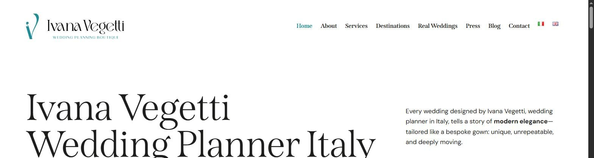

Ivana Vegetti: the page says artistry. Her clients say honesty.
A homepage built on elegance and emotion. Three client testimonials that praise something else almost completely — someone honest and direct, who won't give you a generic answer. In a category where every planner promises the same beauty, that gap is the whole job.
Reviewed 18 September 2026, re-checked 26 September 2026 · Scope: Italian and English homepages, About, services, and the published client testimonials at ivanavegetti.it, compared with three Lake Como and Milan planners. Public material only: no interviews, no private information. Quotes from the Italian pages are given in the original with my English translation in brackets; the English pages are quoted as published.
This is speculative work, not a client relationship
I picked Ivana Vegetti's studio and this gap on my own initiative — no engagement, no affiliation, nothing commissioned, nothing beyond what's public on her site. It exists to show how I'd approach a Brand Strategy Core, not to claim I was hired for one. If Ivana Vegetti would rather this page not exist, email me and it comes down.
Ivana Vegetti sells what every luxury planner sells. Her clients buy something only she is praised for.
The site is beautiful and says so — bespoke, elegant, unique, emotional. Every competitor in the scan says the same four words. Meanwhile the three published testimonials, unprompted, describe a different person: honest, direct, patient, the one who finds the compromise. That trait is rarer, harder to copy, and it's exactly what a couple choosing between four similar portfolios needs to hear. It's on the page — in the testimonials, below the fold.
Where the brand stands today, in four categories.
Aesthetic execution
Message–proof alignment
Differentiation
Conversion clarity
The craft is not the problem — photography, copy rhythm and polish are well above what a boutique studio usually manages alone. The gap is that the brand's strongest asset, what clients say about working with her, never makes it into the words she has chosen for herself.
Elegance, bespoke, emotion — the category's vocabulary.

The English hero reads: “Every wedding designed by Ivana Vegetti, wedding planner in Italy, tells a story of modern elegance — tailored like a bespoke gown: unique, unrepeatable, and deeply moving.” The Italian homepage says the same: “un racconto autentico di moderna eleganza, pensato come un abito su misura: unico, irripetibile, che suscita emozioni” (“an authentic story of modern elegance, conceived like a made-to-measure gown: unique, unrepeatable, stirring emotion”). The next sections continue in the same register — “a one-of-a-kind piece of art,” “Italy as an emotion, a journey, a promise.”
Her About page describes a real point of view — a sensibility that comes from fashion and the visual arts, “contemporary minimalism,” “Eleganza e lusso discreto: la mia firma creativa” (“Elegance and discreet luxury: my creative signature”). It's a credible aesthetic. It's also the aesthetic every competitor below claims.
Three testimonials, one trait nobody asked them to name.
What she says about herself
Modern elegance, bespoke gown, one-of-a-kind art, Italy as emotion. Aesthetic, aspirational, true of the whole category.
What clients say about her
Honest, direct, patient, finds the compromise, never generic. About judgment and trust under pressure — and specific to her.
The homepage says
- “Tailored like a bespoke gown: unique, unrepeatable, and deeply moving.”
- “I don't follow traditional rules of romance — I believe every wedding should feel like a one-of-a-kind piece of art.”
- “Italy as an emotion, a journey, a promise.”
Her clients say
- Ilaria: “She was our anchor — supportive, patient, honest, and direct. You'll never get a generic suggestion from her!”
- Isabel: “She didn't just understand us as a couple — she empathized with us, found the right compromises, and always the best solutions.”
- Erica: “Warm, professional, honest, and sincere… always respecting our taste with remarkable professionalism.”
Three separate people volunteered a version of the same trait. “Honest” appears in two of three testimonials; “elegant” appears in none. That's the brand the market has already assigned her — and it's buried under language that could belong to any luxury studio in Italy.
Everyone promises beauty. Nobody promises the truth.
| Brand | Lead message | Proof on the page | Who it's for |
|---|---|---|---|
| Ivana Vegetti | Modern elegance, tailored like a bespoke gown: unique, unrepeatable, deeply moving. | Real Weddings portfolio, press (Elle Sposa, Lovenozze, The Real Wedding), three testimonials | Italian and international couples; Milan, the lakes, all of Italy |
| Elena Renzi | “We give shape to big dreams by paying attention to the smallest details.” | The most wonderful villas on Lake Como | International couples, Lake Como |
| WeddingBox Lake Como | Luxury Lake Como wedding planner since 2009; “a calm, organised approach.” | Years in business | Couples from around the world |
| Love On Lake Como | “A luxury and stylish affair,” bespoke design emphasising personality. | Lake Como setting and design | Destination couples |
Luxury, bespoke, elegant, personal: four planners, one vocabulary. The only competitor that says anything about how it behaves is WeddingBox, with “a calm, organised approach” — and that's the most concrete line in the table. Directness is unclaimed. Ivana is the one with the evidence for it.
Who is actually deciding, and what breaks the tie.
The shortlist stage
Her portfolio and press features put her in front of couples who have already shortlisted three or four planners on aesthetics alone — the photos got her this far. At that stage, beauty is table stakes. What breaks the tie is confidence that this person will steer them well.
The international couple
The site runs in Italian and English, and her own blog writes about why more foreign couples choose Milan and the lakes. A couple planning from abroad can't drop by the venue. Their biggest fear isn't an ugly wedding — it's a planner who says yes to everything and surprises them later. Honesty is the reassurance they're shopping for.
What the testimonials prove
Every quoted client describes the relationship, not the decoration: understood us, found compromises, guided us, told us the truth. That is the service, as experienced. The homepage should describe it in the same terms.
Not a critique — a draft of the real deliverable.
A first pass at four pieces of a Brand Strategy Core — unsolicited, not yet sharpened by client input or interviews.
Draft positioning statement
“The wedding planner who won't tell you what you want to hear — only what actually works, and then makes it beautiful.”
This keeps the artistry she clearly delivers, but leads with the trait three clients volunteered: she's direct. That's harder to copy than “bespoke,” because it can't be claimed — it has to be shown on every call.
Messaging framework, two services
Full Planning — lead with judgment: “You're not hiring someone to say yes to everything. You're hiring someone who'll tell you when an idea won't work — before it costs you money to find out.”
Day-of Coordination — lead with trust under pressure: “The day only goes wrong when no one in the room is willing to make a call. That's the job.”
Voice guide, one do/don't pair
Don't: “Every wedding is a unique journey of beauty and emotion.” — true of every planner's homepage, provable by no one.
Do: “I'll tell you if the venue you love won't work for 140 guests. That's what you're actually paying for.” — specific, checkable, and what her own clients say made the difference.
Proof placement
Move the strongest testimonial lines — “You'll never get a generic suggestion from her,” “honest, and direct” — from the bottom of the homepage into the hero and the services page, verbatim and attributed. They're the most persuasive words on the site, and right now they're the last thing a visitor reaches.
If this were a paid engagement, it would start here.
This week
- Put one testimonial line — “You'll never get a generic suggestion from her” — directly under the homepage headline.
- Add “honest, direct” to the About page opening, in her own words.
- Make sure both language versions carry the same testimonials.
This month
- Rewrite the hero around judgment and honesty, and let the photography carry the beauty.
- Give each service a sentence about the call Ivana makes in it, not only its scope.
- Collect two or three new testimonials with a question about the hardest decision she helped with.
This quarter
- Interview past couples (the Core step this spec skips) to find the exact moment they started trusting her — it becomes the About page's anchor story.
- Build a short “how I work” page: the three moments she says no, and why.
- Use the same line in press pitches and wedding-fair material so the trait travels beyond the site.
What this spec version leaves out: a real Brand Strategy Core starts with up to three stakeholder interviews and a written competitive scan against named competitors in depth. Neither happened here. The statement and messaging above are a plausible first draft, not a final answer.
Want this kind of read on your own brand?
€1,200 · 1 week · no obligation beyond the audit itself